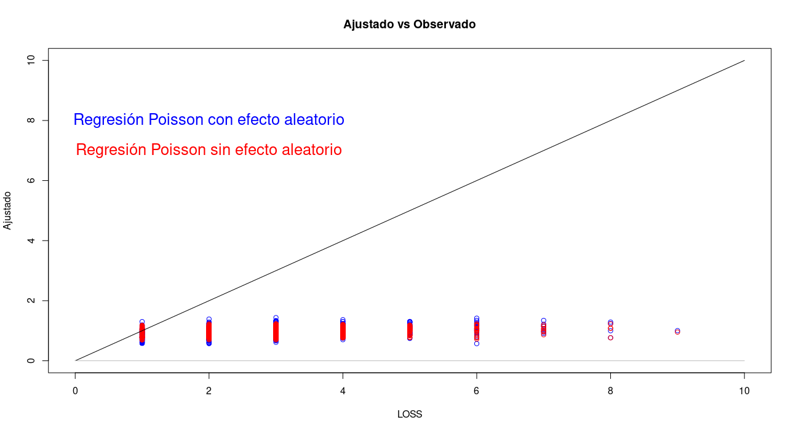

Se ajusto el mismo modelo que en la tarea 3 pero agregando el id del hospital como efecto aleatorio (el id es una variable tipo factor). De esta menera se mejora el análisis post-ajuste.
Las variables que antes eran significativas lo siguen siendo, y no se agregaron más.
library(lme4)
(modelo2 = glm(LOS ~ Age + Gender + Insurer + Owner,
family = poisson(), data = T3P2))##
## Call: glm(formula = LOS ~ Age + Gender + Insurer + Owner, family = poisson(),
## data = T3P2)
##
## Coefficients:
## (Intercept) Age Gender Insurer Owner2
## 0.66634 0.01415 0.00312 0.24607 0.07124
##
## Degrees of Freedom: 786 Total (i.e. Null); 782 Residual
## Null Deviance: 540
## Residual Deviance: 505 AIC: 2670modelo3 = glmer(LOS ~ Age + Gender + Insurer + Owner + (1|Hospital),family = poisson(), data = T3P2)
summary(modelo3)## Generalized linear mixed model fit by maximum likelihood (Laplace
## Approximation) [glmerMod]
## Family: poisson ( log )
## Formula: LOS ~ Age + Gender + Insurer + Owner + (1 | Hospital)
## Data: T3P2
##
## AIC BIC logLik deviance df.resid
## 2659 2687 -1324 2647 781
##
## Scaled residuals:
## Min 1Q Median 3Q Max
## -1.397 -0.548 -0.141 0.385 3.988
##
## Random effects:
## Groups Name Variance Std.Dev.
## Hospital (Intercept) 0.0165 0.128
## Number of obs: 787, groups: Hospital, 29
##
## Fixed effects:
## Estimate Std. Error z value Pr(>|z|)
## (Intercept) 0.67579 0.09796 6.90 5.3e-12 ***
## Age 0.01479 0.00505 2.93 0.0034 **
## Gender -0.00399 0.04665 -0.09 0.9318
## Insurer 0.22037 0.05247 4.20 2.7e-05 ***
## Owner2 0.06403 0.08908 0.72 0.4722
## ---
## Signif. codes: 0 '***' 0.001 '**' 0.01 '*' 0.05 '.' 0.1 ' ' 1
##
## Correlation of Fixed Effects:
## (Intr) Age Gender Insurr
## Age -0.348
## Gender -0.146 -0.051
## Insurer -0.452 0.000 0.016
## Owner2 -0.807 -0.005 -0.015 0.215El nuevo modelo tiene un ajuste moderado pero se comprueba que el efecto aleatorio resulta significativo.
anova(modelo3,modelo2)## Data: T3P2
## Models:
## modelo2: LOS ~ Age + Gender + Insurer + Owner
## modelo3: LOS ~ Age + Gender + Insurer + Owner + (1 | Hospital)
## npar AIC BIC logLik deviance Chisq Df Pr(>Chisq)
## modelo2 5 2670 2693 -1330 2660
## modelo3 6 2659 2687 -1323 2647 12.8 1 0.00034 ***
## ---
## Signif. codes: 0 '***' 0.001 '**' 0.01 '*' 0.05 '.' 0.1 ' ' 1